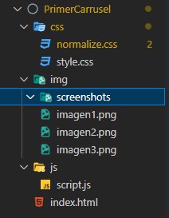

Conocimientos necesarios para realizar esta práctica
- Javascript, debes saber seleccionar elementos del DOM y como funcionan los listeners de eventos además de las funciones
- CSS en nivel avanzado con capacidad de comprender como realizar posicionamientos principalmente
- HTML en toda su mayoyoría para poder comprender el porque de la estructura, siendo esto el punto más importante
Ahora si, comencemos...
Para comenzar genera un directorio básico de una página web, ya sabes, un archivo llamado index.html como archivo principal, y las carpetas para tus imágenes, archivos css y de Javascript, esto depende mucho de cada persona sin embargo a continuación te dejo una captura de como quedó el mió.
Ahora lo siguiente que debes hacer es generar en el archivo de index.html colocar la siguiente estructura
El primer div solamente nos servira para englobar todos los elementos necesarios, no se le dará estilo, aunque si lo desearas podrás darle medidas y ubicaciones específicas, normalmente este tipo de elementos gráficos suelen ocupar todo el ancho de pamtalla.
El segundo div solo nos servirá para colocarle la imagen de fondo que deseemos, y servirá como el área de trabajo para la posición de los botones, los cuales estarán encima de ese elemento usando relative y absolute.
Finalmente se colocan dos botones con una clase para su diseño la cual es general para ambos.
Dando estilo a con css
Al ser solo para una muestra el código css no es tanto de diseño, es más de posicionamiento asi que comencemos con la explicación
CSS para el div imagen-carrusel
Aquí únicamente se le da diseño general que se le da a una imágen de fondo, le quitamos la repetición con background-repeat: no repeat; despues ajustamos el tamaño de la imagen con background-size: cover; y finalmente la centramos con background position: center; la altura colocada depende de cada quien, normalmente no deberá ser tan grande puesto que si las imágenes no son grandes quedará un espacio vació.
IMPORTANTE: Se coloca position: relative; para que a los elementos que se les ponga position: absolute; tomen solo las medidas del elemento con relative como su area de trabajo, por lo que debes colocarlo siempre que quieras posicionar elementos
CSS para el posicionamiento de los botones encima del div que mostrá las imágenes
Ahora debemos darle un diseño a los botones y además lograr posicionarlos encima de el div que tendra de fondo las imágenes, para ello primero damos diseño a los botones, y, usando su clase aplicamos el siguiente código css, este código no necesita explicación, el diseño depende de cada quien así que sientete libre de darles el diseño que gustes
Posicionando los botones encima del div que mostrará las imágenes
Si recuerdas se hizo un div para los botones, a este div le debemos de dar el position: absolute; y al colocarlo notarás como ese div estará encima de la imagen, aunque los elementos no estan ni centrados, y no tienen espaciado, para poder hacerlo se debe de dar como propiedad un height del 100%, esto hará que el div de esos botones tome toda la altura de el div que tiene la position relative, en este caso el div de las imágenes, ahora para centrar los elementos de manera vertical debemos usar primero un display: flex; para poder acceder a el centrado vertical, con align-items: center; lograremos eso, y finalmente para darles un espaciado usamos justify-content: space-between;, sin flex no podriamos acceder a estas propiedades asi que es importante que lo coloques, con esto lograras tener el diseño, solo falta darle funcionalidad con Javascript :)

Realizando código de Javascript
Para finalizar solo resta realizar la funcionalidad, esta se divide en distintas partes, primero seleccionamos los elementos que vamos a utilizar, luego inicializamos una variable que funcionara como el indice, posteriormente se instanciará un arreglo con la dirección de las imágenes,luego creamos la función que asignará por medio de DOM el elemento de un arreglo en base al indice recibido, y finalmente se crean las funciones en base al evento click de los botones, a continuación se muestra todo el código